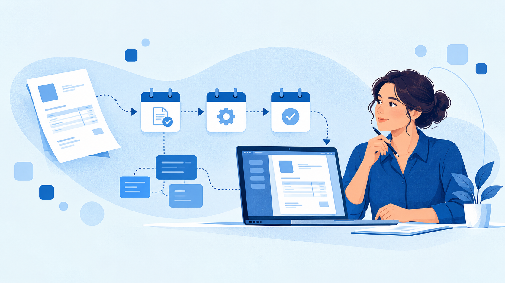

Ratgeberillustrationen für Startkontor
Zwölf individuell generierte Motive in der Startkontor-Farbwelt. Titel und Texte werden auf der Website als deutsches HTML dargestellt.
Die erste Rechnung: Pflichtangaben, Nummernkreis und typische Fehler
Ratgeber öffnen

E-Rechnung bis 2028: ein Fahrplan für junge Unternehmen
Ratgeber öffnen
Belege richtig aufbewahren: ein Ablauf, der einer Prüfung standhält
Ratgeber öffnen
Kleinunternehmer oder Regelbesteuerung: die Entscheidung im ersten Jahr
Ratgeber öffnen
Der erste Mitarbeiter: Lohn, Meldungen und Fristen
Ratgeber öffnen
Arbeitszeit erfassen: was heute gilt und was geplant ist
Ratgeber öffnen
Personaldaten digital führen: Rechte, Löschung und Auftragsverarbeitung
Ratgeber öffnen
Softwareverträge lesen: Laufzeit, Daten und Ausstieg
Ratgeber öffnen
CRM ohne Overhead: eine Pipeline in vier Wochen aufsetzen
Ratgeber öffnen
Warenwirtschaft und ERP: wann ein junges Unternehmen den Umstieg wagt
Ratgeber öffnen
Gesamtkosten einer Software rechnen: vom Listenpreis zum Jahresbudget
Ratgeber öffnen
Das Anbietergespräch: fünfzehn Fragen vor dem Kauf
Ratgeber öffnen